Face Morphing
Defining Correspondances
We need to define correspondance points in order for the Delanuay algorithm triangulate them. In order to get the correspondance points, I used the available tool. However, in order to
find correspondance points, I needed to resize both pictures so that there was no indexing error. For this part of the project, I decided to morph the kid version of myself into my current self.
In order to triangulate the images, I used the available Delanuay function from scipy.spatial.
Associated Images
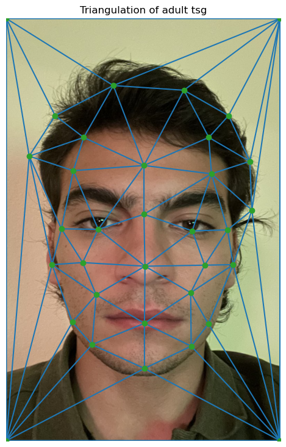
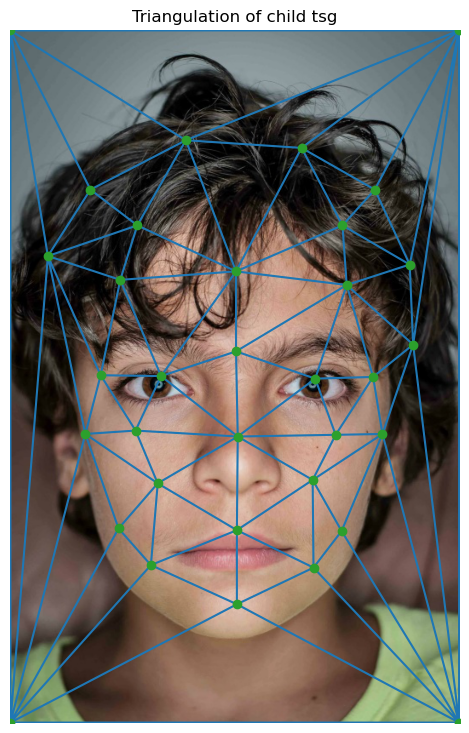
Computing the midway face
In order to compute the mid-way image, we must first find the correspondance points in the mid-way image. Since the midway image is at the middle of the morphing sequence, we can just take the
correspondance points to be uniformly averaged, meaning that we compute (im1_points + im2_points) / 2. After that, we need to find a transformation from both images in the morphing sequence, and morph
them into the shape defined by the averaged correspondance points. We know that the triangulation of all 3 images have corresponding triangles, so we need to find a transformation for each triangle in the
Delanuay triangulation of input images to the mid-way image. In order to do that We need to find the coefficients of the 3x3 homogenous affine transformation. Since we have the coordinates in both images and
the midway image, we are basically trying to transform the points in the input image by the affine transformation to get the new points. However, since we actually have coordinates for both the input image and the
midway image, we can define a transformation matrix that transforms the affine coefficients to the points of the mid-way image and use np.linalg.solve to find the affine coefficients. Once we have the affine coeeficients,
with polygon, we can define a mask that would only display that specific triangle and apply the transformatioin to the triangle by using the available points. However, instead of forward morphing, I opted to use inverse affine
transformation finding a transformation from the mid-way image to the input image because this approach avoids holes. After that since the results we'll get won't be integers, we might use interpolation to find the where to put
the pixel exactly. However, interpolation did take a lot of time to run and didn't improve my images, so I didn't use that technique and changed the indices to integers. The results are below.
Associated Images
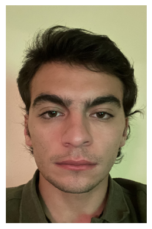
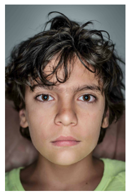
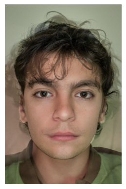
> The Morph Sequence
Creating the morph sequence is very similar to creating the mid-way image. Basically, in every frame of the sequence, we need to warp both images to a mid-way image, and take the weighted average of the resulting image, which is cross-dissolving.
These mid-way images may be interpreted as intermediate images that contain the correspondance points of the current transformation. Then we triangulate these points and morph both images to these triangles resulted by the intermediate points. Then with
these transformed images, we average them again according to some fraction. Since We are trying to morph a source_image to a target_image, the fraction should be varying. I had 45 images, so I choose the moving fraction to be i / 45 at the i'th iteration of the
algorithm and used the same fraction to first average the points, then average the morphed images as follows:
intermediate_points = (i / 45) * im1_points + (1 - i/45) * im2_points
intermediate_image = (i / 45) * morphed_im1 + (1 - i / 45) * morphed_im2 (for each color channel)
To visualize this. I created a gif which operates at 30 frames per second.
The Sequence

The "Mean Face" of a population
This part is very similar to previous parts as well. Basically to create the mean face of the population (I choose to use the Danish data set), we need to find the average shape of the face, which we can do by averaging the correspondance points. For this part, I divided
the population by gender and computed seperate average shapes for both male and female populations. I used uniform weighting, so basically I took the dot product of the male points with (1/30) and (1/7) for the female population, the denominator is the number of samples in the
population. After this, I warped each male to the average male shape, and each female to the average female shape. Now that all the images are structurally similar, we can just compute another dot-product to compute the final mean-face with the same constants as above. The results of this process are below.
To warp myself to average danish male and average danis female, and them to me, I just needed a same-size image with correspondance points. However, the correspondance points should be chosen on the same ordering as the average images, so I computed the order at which the correspondance points for the danish population
were taken, and then defined similar correspondance points on my image. The results are below:
Associated Images
Below Includes 5 random danish dudes transformed to their average gender
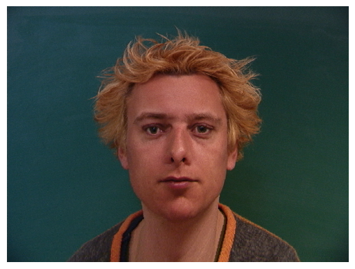

 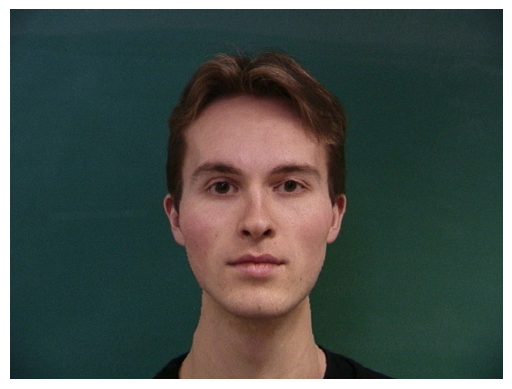
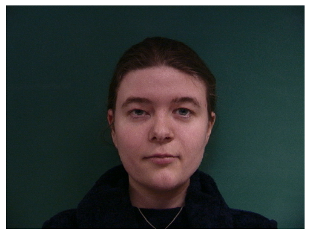
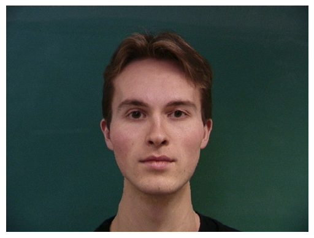
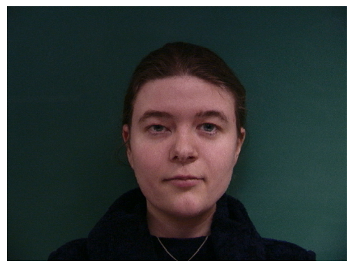
Below is the average face for each Danish gender
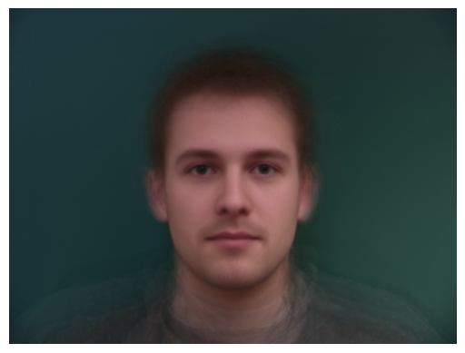
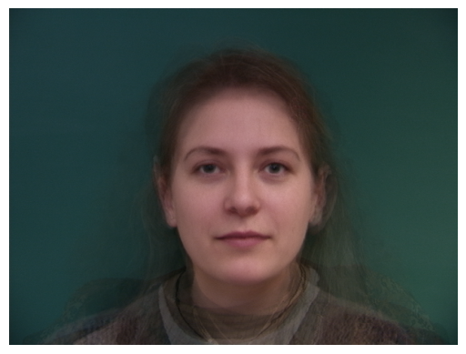
Here's me
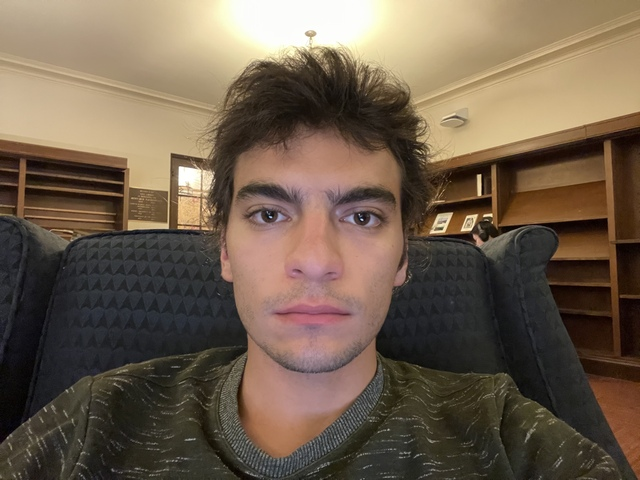
Here's me warped to average male and female dane
 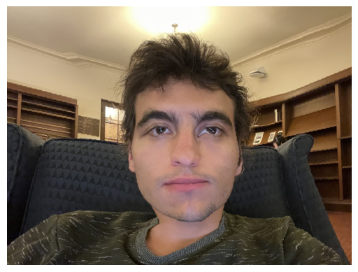
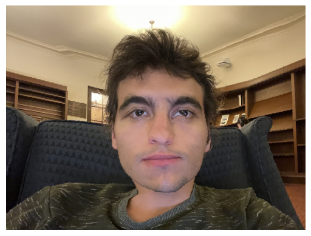
And here's both warped to me


Caricatures, Extrapolating from the mean
For extrapolation, we want to exaggarate the structure of either of the images. I used the following equation to exaggarate the structures features of either image:
extrapolation = my_image + alpha * (mean_image - my_image)
And for the mean image, I used mean male dane and female dane. I used to constants for this alpha0 = -0.5, alpha1 = 1.5. Selecting alpha to be -0.5 will exaggarate the
feaures of my face since there is more of that in the extrapolation and vice versa for the positive constant. And then I transform the triangles formed by the points in the source image, which is my face, by the warping
algorithm developed earlier. This creates the following caricatures of myself.
My features exaggarated with extrapolation with average male and female respectively


And here's exeggarated features of average male and female dane population on my face
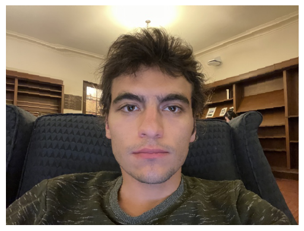

Bells and Whistles
I opted to create a PCA basis for the Danish images. Principal Components Analysis is a dimensionality reduction technique. In order to compute this basis, we first grayscale the images, then compute the average of the images as weighted average.
I first tried to use the grayscaled structural average that I've obtained through warp, but it didn't work as good. Later from each image, we subtract this average to center data and have a matrix of vectorized and demeaned image X_{centered}. Then
we compute the covariance matrix and the principal components (or the eigenvectors) of this matrix are the directions in which the variation is the most, and it is assumed that only the first few principal components are enough to explain data, images in this context.
Below we have eigenfaces, which are basically the first few principal components of the covariance matrix:
Eigenfaces
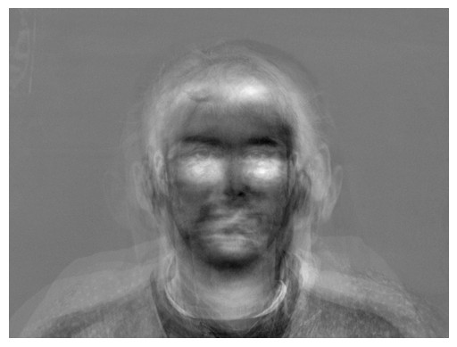
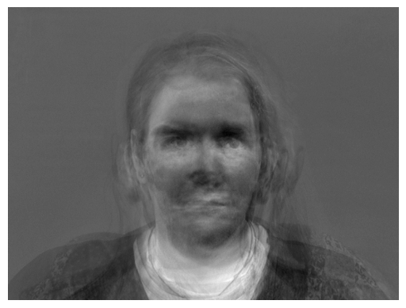
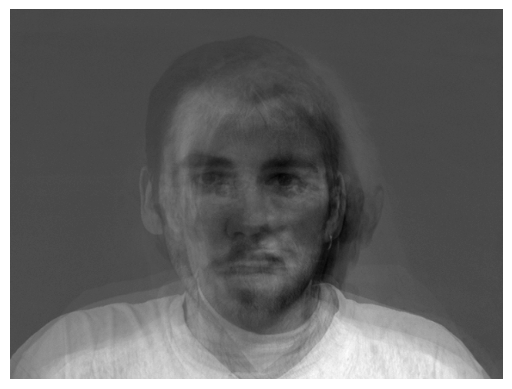
Then we can use this basis to project the original image to this basis and explain the image requiring fewer data, which is the point of PCA, dimensionality reduction
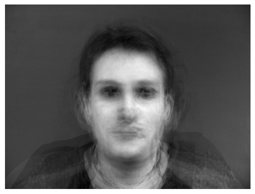
 The results don't look as good as the original images, probably because 37 images isn't enough to describe the principal components of the images I used, a better dataset could have been used.
Back to main page
The results don't look as good as the original images, probably because 37 images isn't enough to describe the principal components of the images I used, a better dataset could have been used.
Back to main page